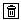
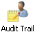
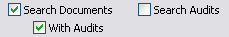
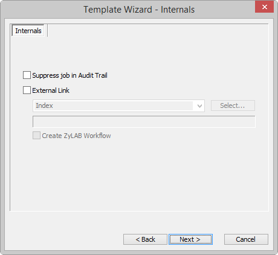

Before security can be set, users have to be added to a user database. This database is located at ~\Program Files\ZyLAB\Information Management Platform\Users. User groups will be defined in the groups database, and in the group profiles database will be defined in which NT groups a certain user is located. After a fresh installation these databases are empty and can be filled with the Security tab in ZyINDEX. Underneath the Security tab folders can be found in which the users/groups can be imported, created and the identities of the users can be defined.
Default user roles are created, which can be used or adjusted to fit your needs.
During installation you can choose between five types of security:
No ZyLAB Security: standard network access only
Advanced Server: Import user (groups) from the NT domain
An anonymous user account enables you to access the databases and add your own user (groups).
Advanced Server: Enter your own user (groups)
Advanced Client: Use existing database (NT domain)
Advanced Client: Use existing database (own user groups)
The first option does not install security. If you are no Domain Administrator, you choose for Advanced Server: Import user (groups) from the NT domain. The 4th and 5th option both assume a working security database is in place.
Before you start using ZyLAB Security, walk through some basic settings.
You updated or restored the basic settings.
Each time the Settings are adjusted, the settings.xml file will be modified, thereby encrypting the passwords.
In this dialog, you can:
Update expire date to one day for "All imported NT users" or "All other users"
Create NT groups
Import all NT groups
Restore subgroups relations
Apply NTFS on install directory
ZyINDEX > Security is open (or in the ZyLAB Web Client page select the menu Admin > Security).
You have imported groups.
Whenever you import users/groups from AD (or even RMA) you should adjust the settings.xml (default settings.xml looks at ZyLAB Active Directory).
After you have created one or more users, you can add them to a group. Users can be added to the default ZyLAB User Groups, or you can create new groups.
ZyINDEX > Security is open.
You have created a new group. Now, users can be added.
To change the name of a group, select it, and click the "Change the name for this group" icon:  . Change the name, and click OK.
. Change the name, and click OK.
To delete a group, select it, and click the "Delete this group" icon: . Click OK.
Optimize database is a technical solution, and is not recommended for frequent use. You can use it to minimize the size of the ZyLAB user database, after major changes.
ZyINDEX > Security is open. You have created a group. You want add users to groups by selecting them one by one from a name list.
You have added users by selecting them one by one.
ZyINDEX > Security is open. You have created a group. You want to dynamically add users to groups by selecting them with a template or query based on field values.
You have dynamically added users by selecting them with a query (based on field values).
ZyINDEX > Security is open. Groups are created. You want to add subgroups.
You have added users by selecting groups (subgroups).
One of the first steps in Security is to import or create users. There are two default users, the anonymous and the administrator. One user is created for you, so that you can manage the accounts. If that is not done yet, you can follow the steps below to import yourself (and other users).
You imported users through the RMA, a Windows NT domain, a XML file or a ZyLAB table.
The authentication of the users will be done automatically with use of the NT domain security settings. The users and groups used for the NTFS security has to be NT based otherwise the authentication will not work. Also see, ZyNETLogin: Import Windows NT users (page 175).
Whenever you import users/groups from AD (or even RMA) you should adjust the settings.xml (default settings.xml looks at ZyLAB Active Directory).
ZyNETLogin enables you to authenticate users by using integrated or basic clear text authentication. This will allow you to import Windows NT users, without manually adding (new) passwords to the ZyLAB User tables, while still keeping a firm security policy in place. If a user is authenticated, then ZyNETLogin generates a cookie using the random password that was generated for the user when the account was imported. This cookie and a login page is submitted to the client which can then automatically logon to the Web Client. The webserver zynet.exe is running in anonymous mode as a user that has full permissions to access the indexes and data.
ZyNETLogin gets you authenticated on the domain, takes your username, searches the name in the User table, and gets the password you have in ZyINDEX. It encodes the password and username in the cookie and hands over the cookie. Then it goes to the default login page for automatic login. As you see it does not matter what password you use for the user.
If ZyNET or ZyNETlogin (advanced security) is running in integrated authentication mode in IIS, users that are members from imported LDAP groups are not automatically imported in ZyLAB security based on their group membership when they perform an automatic login action to access a WebClient (This information applies to: ZyINDEX Security, Version V5.0 SP4c).
For more information on how to solve this, see Knowledge Base article PZ01713.
Users in groups imported from an active directory using WinNT or LDAP are not authenticated at logon.
When an active directory group is imported in ZyLAB security users, that group is not authenticated and added to the ZyLAB security user database.
When a LDAP group is imported a member of this group that is logged on as the current logged is not authenticated by ZyLAB security.
If the ‘Automatic logon’ setting is active in ZyLAB security (General/Settings) users in LDAP groups should be automatically imported in the ZyLAB security users database from the LDAP group directory when logging on to a WebClient (Automatic login) or starting a ZyLAB windows application.
This is not happening, users are not imported and thereby authenticated as an anonymous user account that can result in denied access permissions.
If you want to setup import from active directory, you have to complete the "activedirectory" attribute (marked with green). If it appears you can automatically import or refresh a user when logging in using 'basic clear text' authentication but not when using 'integrated windows' authentication, then probably you have to configure a special user and password which has rights to access the active directory (marked blue).
How to configure ZyLAB LDAP integration to import users and LDAP groups from an active directory to support users to be automatically imported from imported LDAP groups on logon.
When a LDAP group is imported, a member of this group who is logged on as the current logged can be authenticated by ZyLAB security. In case the ‘Automatic NT Import’ setting is active in ZyINDEX Security > General > Settings, users in LDAP groups can be automatically imported in the ZyLAB security users database from the LDAP group directory when logging on to a WebClient (Automatic login) or starting a ZyLAB windows application.
To do so you must specify the active directory domain name you want to connect to in the settings.xml file, which can be found in the ZyLAB\Users folder.
If ZyNET or ZyNETlogin (advanced security) is running in integrated authentication mode in IIS, users that are members from imported LDAP groups are not automatically imported in ZyLAB security based on their group membership when they perform an automatic login action to access a WebClient (This information applies to: ZyINDEX Security, Version V5.0 SP4c).
For more information on how to solve this, see Knowledge Base article PZ01713
ZyINDEX is open.
When auditing, this full username will be registered in the Audit trail, and used for logging the user.
You have created a user.
Two important options are to Reload or Refresh user(s) from the original source. This makes sure that all user properties are synchronized. Reload will check if the user is still present in the domain, and if so, update the expiration date. Refresh will check if there are any modifications. Changes that are made to users via WinNT will be updated.
Optimize database is a technical solution, and is not recommended for frequent use. You can use it to minimize the size of the ZyLAB user database, after major changes.
The identities of users can be defined by adding values to relevant user fields, such as Company, Department, Address, etc.
You have added/edited information about the identity of a user.
In the ZyLAB user groups the added information can be used to base queries on and store the results of the query in a user group. For instance, create a couple of new users with in the department field the value sales. They will become a member of the sales group (if the sales group is defined of course).
Two important options are to Reload or Refresh user(s) from the original source. This makes sure that all user properties are synchronized. Reload will check if the user is still present in the domain, and if so, update the expiration date. Refresh will check if there are any modifications. Changes that are made to users via WinNT will be updated.
Optimize database is a technical solution, and is not recommended for frequent use. You can use it to minimize the size of the ZyLAB user database after major changes.
You want to view the user properties of a user.
You have viewed the user properties of a user.
You have created/changed the password.
This User/Password combination will be used in ZyINDEX, and is different from the domain password.
Every user in ZyINDEX can have a PIN code, but imported users preferably do not have a ZyINDEX password.
PIN codes are saved in another way than passwords. PIN codes are essential for the use of digital signatures. If a user signs with a different PIN code, this will result in a different signature. Therefore, an overview of old PIN codes (and their users) is kept, so also signatures set with old PIN codes can be checked for authenticity.
Users receive a certificate that their PIN code is submitted by ZyLAB.
You want to create a PIN code for a user, so he can get access to documents with Digital Signature fields (for example in Modules > Workflow (see the ZyLAB Workflow manual > Security (page 269) > Digital Signature (page 271))).
You have generated a PIN code for a specific user.
Every user in ZyINDEX can have a PIN code, but imported users preferably do not have a ZyINDEX password.
PIN codes are saved in another way than passwords. PIN codes are essential for the use of digital signatures. If a user signs with a different PIN code, this will result in a different signature. Therefore, an overview of old PIN codes (and their users) is kept, so also signatures set with old PIN codes can be checked on authenticity.
Users receive a certificate that their PIN code is submitted by ZyINDEX.
You removed a user from the ZyINDEX Users list.
You want to search on a specific user or group name.
You have searched on a specific user or group name.
You want to search for users/groups on a specific part of an organizational unit.
If you want to return to the previous level, select the Expand this level icon again.
You have searched for users/groups on a specific part of an organizational unit.
You want to backup or restore users, groups and/or profiles.
You can also choose to delete a (backed up) XML file, if it has become obsolete.
You have backed up and/or restored users, groups and/or profiles.
The Audit Trail module stores in an XML file all user activities such as searching, viewing and editing documents and opening, deleting and building indexes. Every user action performed on the audited index creates XML files containing information on the action, the user, etc. You can select the activities you want to store in the XML file. With ZyLAB you are able to index and search all these XML files and view the activities the users have performed.
Once a user (administrator) enables Audit Trail in ZyINDEX, all user actions performed on the chosen index will be logged (when selected) by the Audit trail, including ZyFIND, ZyINDEX and ZySCAN actions. By default, the module audits 43 actions, but an administrator can enable or disable individual Audit trail actions.
Audit trail generates a new XML document for every selected Audit action performed by a user to store the log data. These XML files are stored (by default) in folders in the directory ~\\ZyLAB Data\Index Data\<<short name>>\XML by a Hash Table system to minimize the retrieval time. This means that ZyINDEX in the beginning will create a new folder for every new XML document and starts filling the folders afterwards.
As mentioned, every selected Audit action that a user performs will generate an XML document containing the logged information. The name of the XML file is a GUID (Global Unique ID). All extra information about the XML file is stored in a database. This database can be found in the index directory (\\ZyLAB Data\Indexes\<<short name>>\ZxpPlugins\audit) and is called AUDIT.dbf. Much information is logged in this database and are linked with the XML files due to the GUID. Some examples are: User, Computer name, date and time, index name, file name, Guid, Application. For more information about the data that can be logged, see Retrieve Audit Trail data (page 193).
The user has to enable Audit in ZyINDEX and select the Audit Trail index to be used to log audit actions, and to select the Indexes and Jobs that must be audited. See Enable Audit Trail (page 192).
Your actions on the selected indexes and job templates will now be saved in the Audit Trail index.
You can use ZyTIMERService and Quickbuild to build the Audit Trail index every 10 minutes.
If a normal search is done on the Audit Trail index, you will receive a result list that is filled with XML files that contain the logged document actions done by the users.
<ID>{BB1A09AF-98F9-4225-A5CB-68D125C087F7}</ID>
<TYPE>11</TYPE>
<APP>ZYFIND.EXE</APP>
<DATE>Wish lists.xls</DATE>
<USER>ZYLAB\Gerry as ZyLAB Anonymous User {9B2473D0-4FC5-1348-AA20-D1FEDF5E629C}</USER>
<COMPUTER>ZYNLWS0230</COMPUTER>
<DOCNAME>Wish lists.xls</DOCNAME>
<DOCPATH>C:\TEMP\CULLING INPUT\</DOCPATH>
<INDXNAME></INDXNAME>
<INDXPATH>C:\ZyLAB Data\Indexes\ZyEXAMPL</INDXPATH>
<DOCFLDS>
The fields displayed contain the audit trail information (see table below). These are stored in the audit database.
The additional XML file can contain more information on the event, for example the result list from ZyRESULT.
The following table shows the available fields and a description of their contents.
| Field name containing logged info | Description |
| ID | Global Unique ID |
| Type | The reference number of the action that was performed by the user (see he following table for a list of these numbers and their descriptions). |
| Application | ZySCAN, ZyINDEX or ZyFIND |
| Date | Creation date of XML log file |
| User | User whose action has been logged |
| Computer | Computer that processed the action |
| Document name | Document on which the action was performed by user (if applicable) |
| Document Path | Path of this document |
| Index name | Index on which the action was performed by user (if applicable) |
| Index path | Location of this index |
| Info | Additional event details, depending on type of event |
| Last modification date | Last modification date of the document (if applicable) |
| Filename | Name of the XML log file |
| Path | Path of the XML log file |
| Creation Date | Creation date of the XML log file |
| Size | Size of the XML log file |
For all ZySCAN (job template) events, the following additional information is logged as a field value:
Job name,
Job root path
Template name.
For example: <job name="00000000" path="C:\ZyLAB Data\ZySCAN Jobroot" template="template.job"/>
The Type number in an Audit Trail shows the action that was logged. The value of this field is shown in the result list, but in ZyVIEW the values will only be shown when you double-click the field.
| Type No. | Description | What will be logged? |
| 0 | Search Index | The search statement(s). |
| 1 | Get results | The result list. |
| 2 | Create Index | The index that was created. |
| 3 | Delete Index | The index that was deleted. |
| 4 | Erase Index | The index that was erased. |
| 5 | Import index | A modification in the modfiles database. |
| 6 | Edit document fields | Document fields that have been edited. |
| 7 | Delete document | The document that was deleted. |
| 8 | Merge documents | Documents that have been merged. |
| 9 | Split document | Documents that have been split. |
| 10 | Delete page | The page that has been deleted. |
| 11 | View document | The document that is viewed. |
| 12 | Export document | The document that is exported. |
| 13 | Print document | The document that is printed. |
| 14 | Start application | The ZyLAB application that is started. |
| 15 | End application | The ZyLAB application that is ended. |
| 16 | Start function | The ZyLAB function that is started. |
| 17 | Stop function | The ZyLAB function that is stopped. |
| 18 | Open Job | The job that is opened. |
| 19 | Close Job | The job that is closed. |
| 20 | Delete Job | The job that is deleted. |
| 21 | Create New Job | The new job that is created. |
| 22 | Create New Job template | The new job template that is created. |
| 23 | Create document | The document that is created. |
| 24 | Create page | The page that is created. |
| 25 | Export page | The page that is created. |
| 26 | Enable audit trail | Audit trail is enabled. |
| 27 | Disable audit trail | Audit trail is disabled. |
| 28 | Change audit trail index | The audit trail index that is changed. |
| 29 | Change audit trail event | The audit trail event that is changed. |
| 30 | Generate PIN code | The PIN code that is generated. |
| 31 | Enable add document fields | Add document fields is enabled. |
| 32 | Disable add document fields | Add document fields is disabled. |
| 33 | Create redaction | A redaction was created |
| 34 | Modify redaction | A redaction was modified |
| 35 | Delete redaction | A redaction was deleted |
| 36 | Create TIFF conversion | A TIFF conversion was done |
| 37 | Delete TIFF conversion | A TIFF conversion was deleted |
| 38 | Import user group | A user group was imported |
| 39 | Delete user group | A user group was deleted |
| 40 | Change user group | A user group was changed |
| 41 | Change general settings | The general settings were changed |
| 42 | Audited: Indexes / Job Templates | Which indexes and/or job templates were audited |
| 43 | Change file system security | The file system security was changed |
| 44 | Change document security | The document security was changed |
| 45 | Change functional security | The functional security was changed. |
The easiest way to retrieve this log information is to press  in the vertical icon bar of ZyFIND.
Obviously, you can also perform full-text search queries on the Audit Trail index. Any other feature that is available for regular indexes is also supported for Audit Trail indexes. For information about the Field viewer, see Indirect (Field) Search: Retrieve Documents (page 197).
When the audit trail index is selected in ZyFIND, it is possible to search on the fields of the audit index. If you want to see the actual documents users viewed, it is possible to do an indirect search. An indirect search means that you search for every document that has been, for example, viewed and see the actual results instead of the XML files containing the name of the viewed document. Now you can see the viewed documents yourself, read the information and export or copy them.
For indirect searching you need to select not only the Audit Trail index, but also the index that contains the documents you want to view. Also, the option ‘Search Documents’ and 'With Audits' has to be enabled to do such a search (these options are available when the Audit index is selected):

It is possible to log all actions of ZySCAN which are defined in an Audit Trail index, therefore it is possible to see exactly who, and on which day, and at what time, opened a job, closed a job, deleted a job, created a new job, created a new job template, created a new text (txt/XML) file, created a new image (TIFF) file, exported an image (TIFF) file and edited fields.

If you want to prevent that actions performed during a job in ZySCAN are logged, select 'Suppress job in Audit Trail' when creating a job template. Using this template when processing a job deactivates the Audit Trail in ZySCAN.
If you are running a large number of jobs, it may be convenient to turn the Audit Trail off. It will prevent the accumulation of large quantities of data, which could potentially slow down system performance.